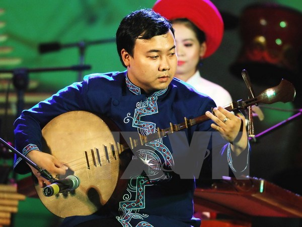

Vietnamese moon lute
Introduction
Vietnamese moon lute, also known as dan nguyet, is a two-stringed Vietnamese traditional musical instrument. It has appeared in Vietnamese fine arts since the 11th century.
Structure
- Soundbox: Round like a full moon, made of light, soft wood.
- Soundboard: Made of thin wood, covered with skin or paper.
- Neck: Long, with frets attached to adjust the sound (or pitch).
- Strings: Usually two strings, made of silk or nylon.
- Bridge: The part that holds the strings tight and helps create sound.
Music genres played on Vietnamese moon lute
- Cheo
- Chau Van
- Ca Hue
- Don Ca Tai Tu
- Cai Luong
Gallery


